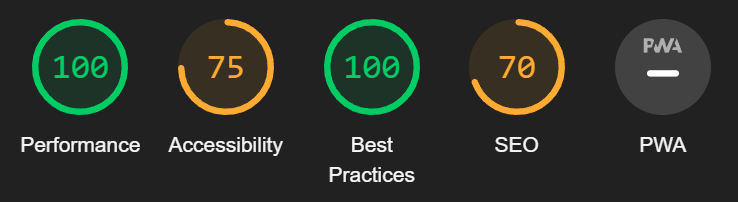

Accessibility
Overview
We used Lighthouse for accessibility testing. Since we were multiple students working in parallel, accessibility testing started before most pages were finished, and was repeated multiple times to ensure the final product retained an acceptable accessibility score. This approach also helped to inform our development practices as we were working on the project.
Initial test
Davide De Giovanni (Photographer). (2018). Four Women Sitting Inside Fendi Cinema [Photograph], pexels.com
The initial accessibility test, run quite early in development with only one page being close to finished, revealed just a couple of problems.
We were missing alt and width/height attributes for most of our images, which was a simple fix. Lighthouse also advised us about low color legibility in certain areas of the website, though at this point, the design was not finalized yet, so we merely took this as a reminder to consider contrasts when selecting colors further down the line.
Final touches
Realizing that an automated accessibility test would only get us so far, we decided to ... before submitting the project.